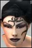

| Author | Thread |
Phione
Supa Leet
 Registered: May 2002
Posts: 370 | Drastic Changes: Modify Camelot. Firstly, I don't see the need for Camelot to be a pvp battle ground with the introduction of Notum War. If those who wishes to participate in mass pvp, then join tower fights. I believe there are always some tower somewhere that's having the action.
And here are my idea of changing the Camelot Dungeon:
1. Divide the current Tarasque Loots into different groups, and create different bosses within the Camelot Castle accordingly holding different groups of loots. These new Bosses (as well as Tarasque itself) will drop maybe some normal mission boss loot or something...
(I can never understand things like GPH have to do with the dragon...)
Groups of Loots and New Unique Mobs:
(1) Dragon Armor parts, Edge of Tarasque, Dragon Tooth Poker, heart thingie and so on--Tarasque.
(2) Smelly Butcher Glove--[Name] the Bloodluster (or some other name, a melee, Enforcer type mob).
(3) GPH, Heavy-Headed Hardwood Staff, Aura Magnifier--[Name] of Jobe (a NT mob that swings a staff).
(4) Hollow Bone Bracer of Merlin Ambrosius, GoC, GoS--Merlin Ambrosius (a MP style mob or something).
(5) Robust Backpack, HPC, all Adv stuff--Sir [Name] (Melee Adv mob I guess).
2. Make all these mobs as strong as mobs like the Diamondine Soldier, or some of the less bosses at Ian Warr's.
3. Cancel the 18 hour clock, and use some sort of system similar to Ian Warr's or just a place holder system.
4. Modify the PF so that not all these things going on on the same PF (to prevent PF lag or crash). For instance, make it so that you "zone" into a new PF when entering the door leading into Tara's Crypt.
5. Get rid of the 25% Suppression, and replace with 75%.
So basicly, I'm suggesting to transform the Camelot Dungeon into more like the new bosses. Please post your comments and suggestions.
Thank you for reading  |
locomdenom
Supa Leet
 Registered: Feb 2002
Posts: 947 | What the hell did you leave for me to suggest?
I can't see anything wrong with this. |
Wildwal
Supa Leet
 Registered: Nov 2001
Posts: 301 | it could kinda be cool |
Exceptional
Leetas
 Registered: Nov 2002
Posts: 17 | I like it how the different factions are fighting over the loot
(err how they're supposed to be fighting over the loot) |
Shashie
Phear Leet
 Registered: Jan 2002
Posts: 99 | I bet you also like how during the different factions' fighting for lotting rights, that few cowards come and ninjaed the loot which started the whole fight in the first place. |
Angelhunter
Phear Leet
 Registered: Sep 2002
Posts: 37 | ehhhhh Do we really need more unkillable bosses in this game?? |
Snuble
I, Leet
 Registered: Mar 2002
Posts: 599 | What creates some cooperation between players in there is the fact that its 25%. Take away that, and killing Tara will become another 18h spawn in a lag fest and the following *****ing about who did the most damage...
And NW... Yeah, there is fighting all the time now right? Last time I checked, the large orgs where pretty satisfied with owning bases in the heart of their factions land... |
assassimon
Clan Apocalypse
 Registered: Nov 2001
Posts: 1522 | I totally disagree with everything in first post, Camelot is to small to hold many unique mobs, the only fun in Camelot is 25% and fighting with omnis over the kill.
I do however think that they should add some of the loot to uniqe mobs out in the wild, add it on the bosses in the normal boss camps and give it like 25% chance to drop 1 of the items.
The loot from Tarasque aren't that special (except GPH) so could be as normal outdoor boss loot.
(dragon armor should maybe be on Tara tho, guess it's not very logic to have that on another mob ) |
Phione
Supa Leet
Registered: May 2002
Posts: 370 | Please place your comments after reading the entire post.
The following is a reply to those who oppose the system:
1. Having Tarasque to be like Diamondine Soldier or Notum Soldier does not make it unkillable. It'll take more coordnation as well as planning, instead of what it is like right now (mindless rushing into Camelot to fill up the dungeon and prevent the other side from gaining access.
2. I've proposed to make the actual maze (hallway, whatever) that leads to each Unique a separate zone. It'll be like, for instance, making the hall way that goes down to Tara's Crypt as a separate zone, instead of one huge zone.
3. With the place holder system like the Diamondine Soldier, or the Quest-like system like the Ian Warr camp, there will be no need for 18 hour clock, and it would allow you to spawn it (or have a chance to spawn it) whenever you wish, as long as you have gathered enough force to take it down.
4. The reason why Tarasque is being fought over everyone is because, simply, that it holds so much loots that useful to different class of people. By dividing up the loot to different bosses, people will be able to go on killing the boss they need to kill, obtain the stuff they need, simple.
5. AO is never intended for the different factions to fight over a dragon because of greed (especially now with NW, those who said they do Tara just for PvP action amuse me). Last edited by Phione on December 23rd, 2002 at 17:12 |
Matrix
Freakin rambo!
 Registered: May 2002
Posts: 7 | I agree entirely with Phione's ideas. |
Jackthis
Eleet
 Registered: Sep 2002
Posts: 12 | Am i missing something? Since when is there PvP on rk2 at tara (where thread starter is clan). Ummm since when does omni put up a fight at tara. Oh ya thats right 3-6 of us might kill 1 or 2. You guys get all 3 spawns every damn 18 hours. I don't know wtf ur whining for. Maybe Rk1 should care more about how it works. theres always at least 6-10 clanners per 1 omni, which is why we dont try on rk2. there is no crowd control, even if there was im sure it would suck like it currently does at towers. |
Cemetarygate
Supa Leet
 Registered: Nov 2001
Posts: 387 | Interesting. But wouldn't these changes suggest that Tarasque is about loot, instead of PvP like many have been claiming? |
Pat
Soleet
 Registered: Mar 2002
Posts: 90 | bump for phione the enf genious  |
Phione
Supa Leet
Registered: May 2002
Posts: 370 | To those who supports this idea: Thank you.
Armycastawry: I don't understand what gives you the impression that I'm whining. This modification will not increase the drop rate of the item, and Clan will no longer "own" Tarasque with this system. Don't see anywhere that'd benifit Clan ppl. As matter of fact, it has nothing to do with me being clan. |
Orchid
Supa LeetRegistered: Jun 2002
Posts: 1598 | Clan hasnt owned Camelot in a long time
BONG! |
Thelcia
Phear Leet
 Registered: Oct 2002
Posts: 109 | Great idea Phione
Only problem I can see is that adding zones creates a place for people to run to when they get aggro. This is fine as long as the zones are very far from the boss of interest, but that means making calemot dungeon much larger than it already is.
You could have the routes starting in different places tho. For example a neat little quest might be:
There is some magical item that the knights of camelot are missing. You need to find this and give it to one of them, When you return it, you find that it opens a portal in the castle. This portal is then only open for like 4hrs, during which time you have to run down and kill the boss. A new boss spawns when someone else completes the quest etc, but the quest cannot be completed again until the 4hrs are up.
Etc, etc -- could do a neat one with a librarian too -- the castle has a lot of neat areas, there is no reason why we should only use one.
Then again, it might just turn into diablo....the intention is more that a whole new playfield can open up, not that a boss is just sitting there. |
Revelator
Supa Leet
 Registered: Dec 2002
Posts: 212 | Rimor Tara is not Atlantean Tara This is a Rimor thread, because Tara there is like going to a daily lottery. Omni simply doesn't show, and there is no real question if Tara will go down or not.
It's ALL about the loot, and not really that good loot either, in the greater scheme of things (except GPH and EoT, both of which drops once in blue moons).
I'm an adv, so I have a better chance than most to go home happy, but once I have my robe, cloak and ring I'll be outta there, except for days and times I have nothing else to do.
And this is not a flame of the Clan organization of Rimor Tara either, it's just not very exciting that's all. Organization is fine for my purposes, although I do hear others mileage varies.
Except the very first raid of course... Very exciting, finally eligible, actual chance of some good stuff (one the ring on the FIRST roll I ever did, well, I say won, I was only one who entered that roll...), big fat dragon, etc.
I think something needs to be done, and Phione's idea seems pretty good. Big roomy upstairs thats never ever used for anything, seems a waste to me. |
Aidid
a Yagyu till I D-I-E <3
Registered: Jul 2002
Posts: 68 | 75% zone = we go back to the days of one single uber guild owning Tarasque. |
Phione
Supa Leet
Registered: May 2002
Posts: 370 | Again, read everything I've written, before replying, thank you.
A large guild might able to "own" one of the mob in the dungeon, but not all of them at the same time. Nor will them able to do so with the difficulty as Diamondine Soldier so on (too much effort). Last edited by Phione on January 8th, 2003 at 00:58 |
Aidid
a Yagyu till I D-I-E <3
Registered: Jul 2002
Posts: 68 | I did read everything you wrote. And you're welcome.
Your ideas might work... I think. But the mobs shouldn't all be as hard as Diamondine. If I wanted a gay hood and had to kill something that tough and all that dropped was a staff nearly every time, I'd be pretty pissed. At least with Tarasque all the loot is on one body, so maybe what you really want won't drop, but perhaps something else cool will. Maybe make the different mobs vary in difficulty?
Back to my original post. I still think it could be simple for one guild to dominate most of the mobs inside the castle. Maybe it wouldn't be that serious on RK2 but on RK1 it'd definitely be an issue. A guild like Storm for example. 325 members and yet they maintain an average level of 162. I doubt they'd have much difficulty in trying to own all the mobs.
If we combine your ideas with the Clannet system I think it would be very cool. All these mobs could be in different zones. People who desperately want to get some dragon armour will go to the Tarasque zone. People who desperately want a gay hood will go to the NT-mob zone. And so on. Rolls would be smaller because people would be spread out amongst the different zones and that would increase the chances of winning.
Hm, I dunno, it's all pretty interesting to me. |
All times are GMT.


 Last Thread Next Thread
Last Thread Next Thread 
 December 22nd, 2002 20:46
December 22nd, 2002 20:46